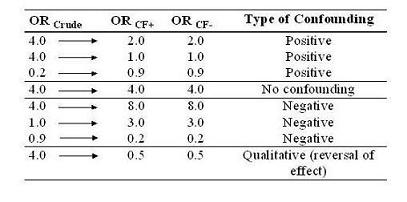

Types of Confounding Bias
Lead Author(s): Jeff Martin, MD
Magnitude and Direction of Confounding
After adjusting for confounding variables, we will have a measure of associaton for each of the confounders.
In the table below we answer the question: What kinds of things can happen with confounding?

Depending upon the direction that is caused by confounding, we call the confounding either positive or negative.
Positive Confounding
In the example of the crude estimate of 4, and the two stratum specific OR are 2, we see positive confounding.
- In other words, the influence of confounding was to overestimate the OR.
No Confounding
In the example of the crude estimate of 4, and the two stratum specific OR are 4 -
- The crude estimate shows a rather healthy estimate but in fact there is no actual association after stratification.
Negative Confounding
Three examples of negative confounding are shown here.
- If the crude estimate is 4.0 but the adjusted estimate is 8.0, this means the influence of the confounder was to attenuate the apparent effect. The attenuation can be so great as to entirely push the crude estimate to 1.
- If the crude estimate is 0.9, but the stratum-specific estimates are 0.2, this is also negative confounding.
- An example of this can also be seen in use of observational studies to look at drug treatment effects. Often the sickest patients, with the poorest prognosis, are given new treatments (or more often drugs that are already licensed for another purpose) first. Thus, any apparent benefit of the treatment may be confounded by these poor prognostic factors and tend to drive the unadjusted odds ratio close to 1.
- This can also be seen as a protective effect.
Qualitative Confounding
The most fulminant form of confounding is known as qualitative confounding, aka a reversal of effect or Simpson's Paradox.
- For example, the crude estimate is 4.0 meaning the exposure in question carries a 4 fold risk for disease, but the adjusted estimate is actually protective.